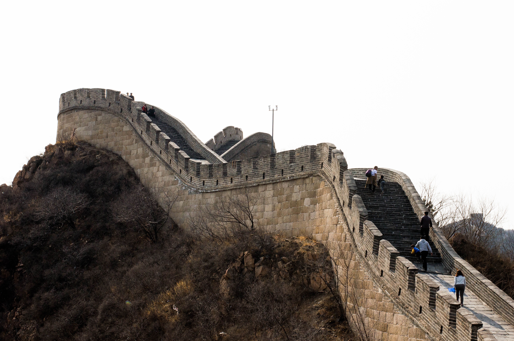
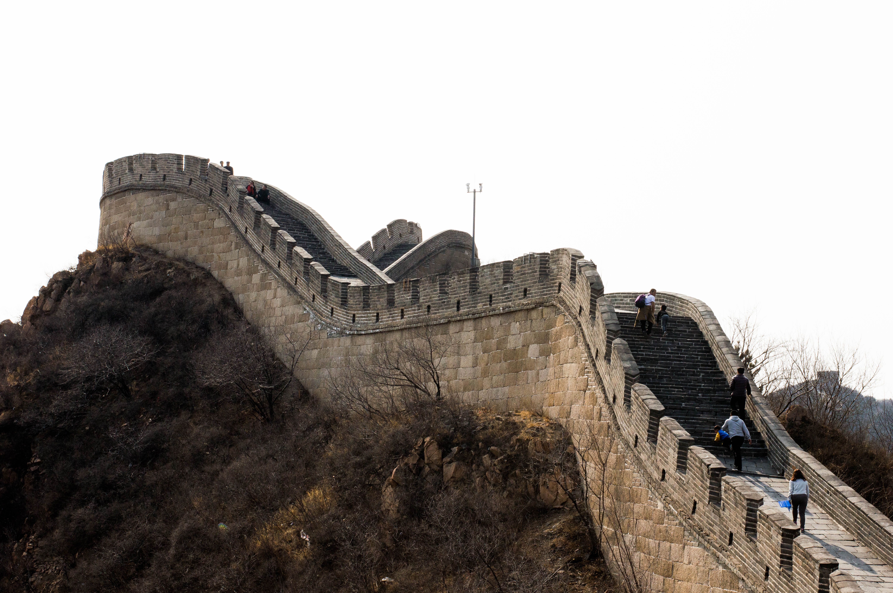
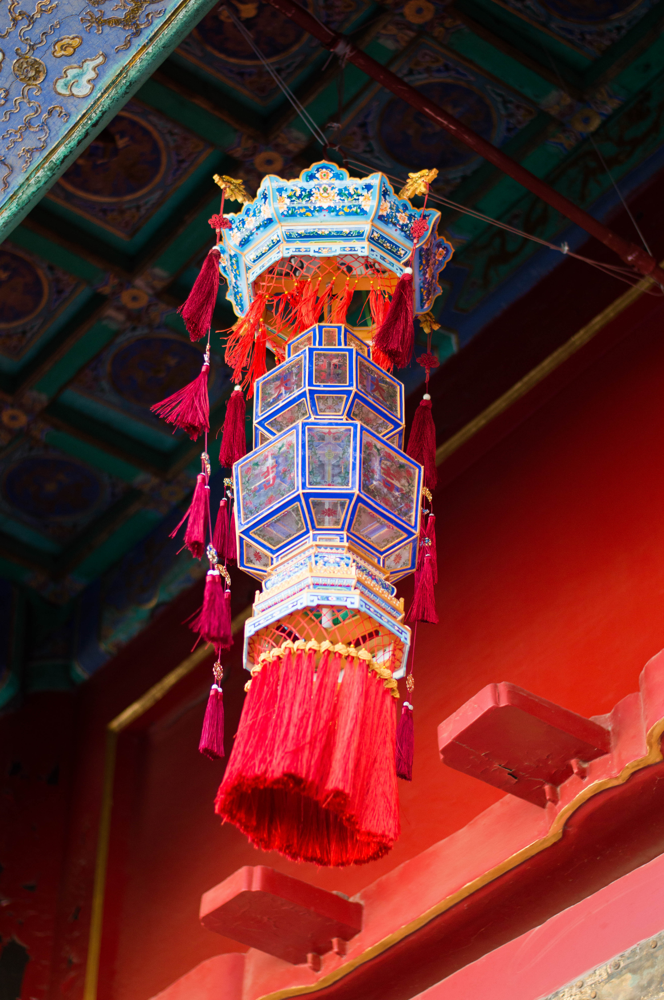
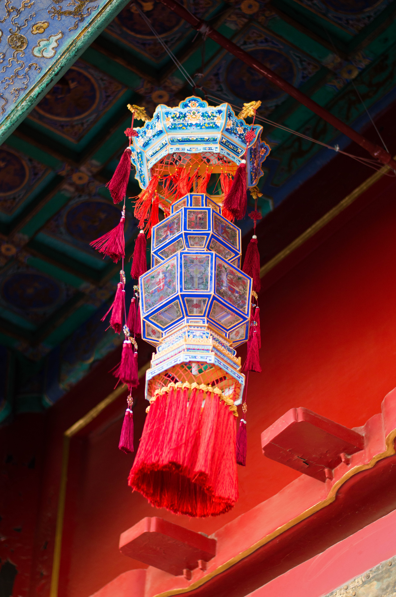

Beijing - 2019
In spring break of 2019, my mom and I traveled to Beijing for a week. We visited the Great Wall, the Forbidden City, the Summer Palace, and other touristy places around the city. We ate a lot of really good food and I was stuffed at the end of every day. These pictures were taken in early March, when the trees are just starting to bloom but aren't fully green yet.


 

 
